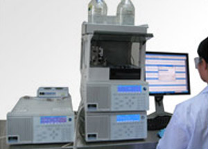
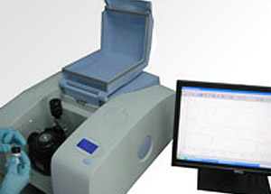

Advanced Analytical Technologies

Scanning Electron Microscopy (SEM)
Uses focused high-energy electrons to reveal surface morphology, chemical composition, and crystalline structure of materials.
- ✓ Determine surface elements
- ✓ Measure elemental composition
- ✓ Identify substances and coatings

High-Performance Liquid Chromatography (HPLC)
Versatile identification of compounding ingredients and detection of residual chemicals in rubber gloves at parts per million (ppm) level.

Fourier Transform Infrared Spectrophotometer (FTIR)
Standard technique for identifying chemicals and materials by analyzing infrared spectral scans and molecular vibrations.